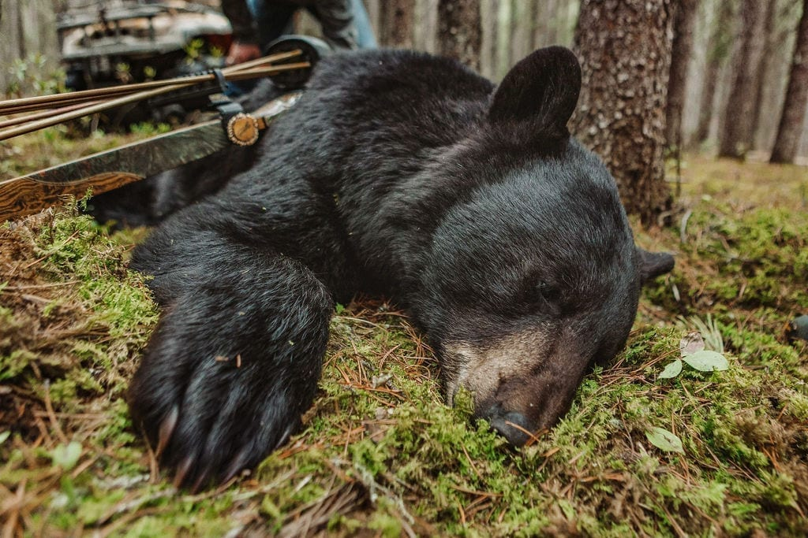
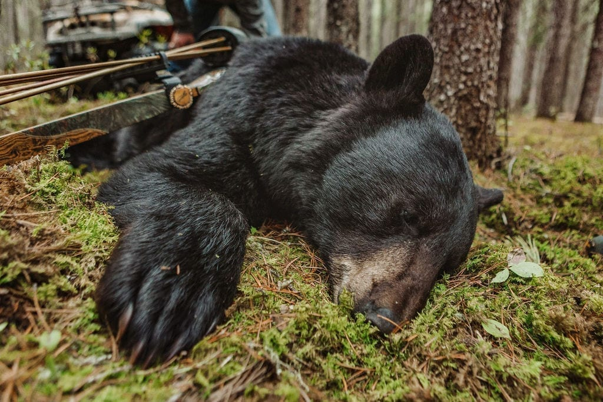

American trophy hunters pay big money to kill animals overseas and import over 126,000 wildlife trophies per year on average. They also do their sport-killing domestically: Bears, bobcats, mountain lions, wolves, and other domestic wildlife also fall victim to trophy hunting, damaging natural ecosystems.
Each year, hundreds of thousands of wild animals in the U.S. and around the world are killed by trophy hunters. The hunters primary motivation is not to get food, but simply to obtain animal parts (heads, hides or claws and even the whole animal) for display.
Trophy hunters use cruel and unsporting methods like baiting and hounding to target native carnivore species like bears, mountain lions and wolves, shoot animals in captive hunts (in which hunters pursue animals who cannot escape). They participate in gruesome wildlife killing contests that target bobcats, coyotes, foxes and other species as well.
© 2022 Humane Society | All rights reserved